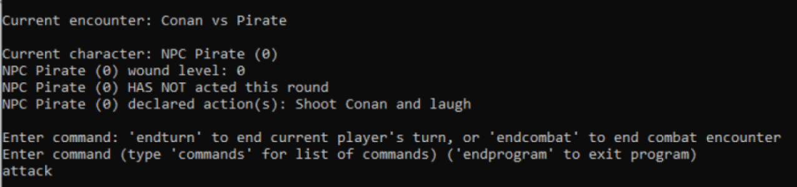
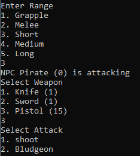

RPG Manager Project
RPG Manager was a final project I created in my second C++ class at Sinclair, though I continued working on it the following summer.
 The program is a command/menu driven game mastering tool for a home brew tabletop roleplaying game.
It stores character data including skills, armor, weapons, and injuries. Characters, skills, weapons, and armors could be created and saved by the user.
It also allows the user to save and resolve encounters, simulating turn order, actions, and dice rolls using menu commands.
The project has been abandoned, but the code can be found at my GitHub.